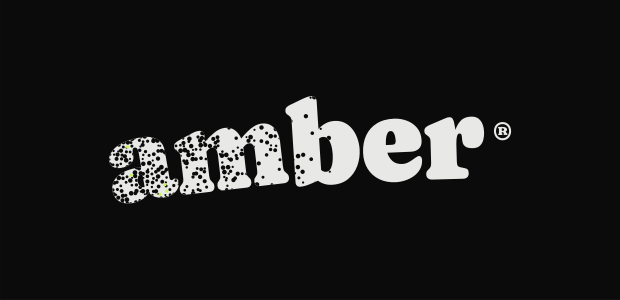
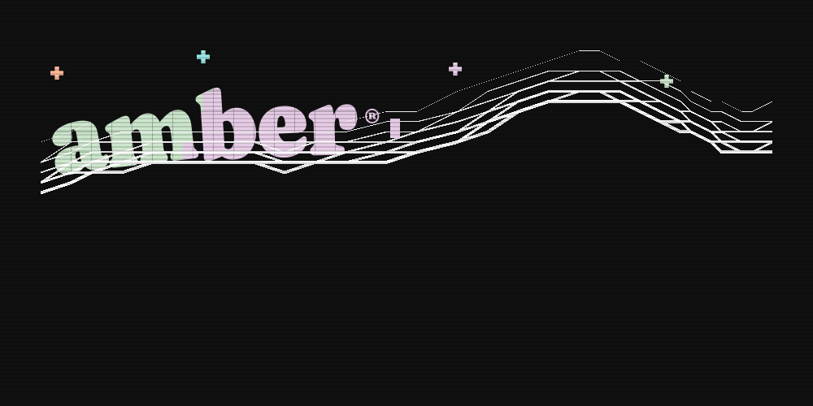
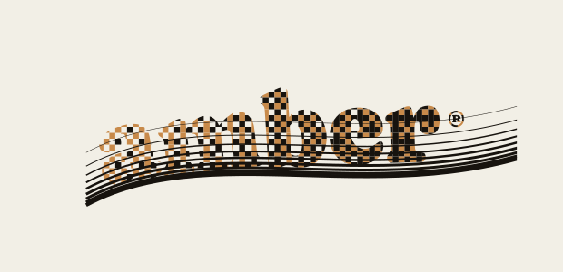
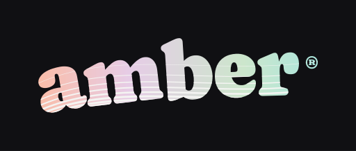
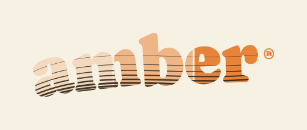

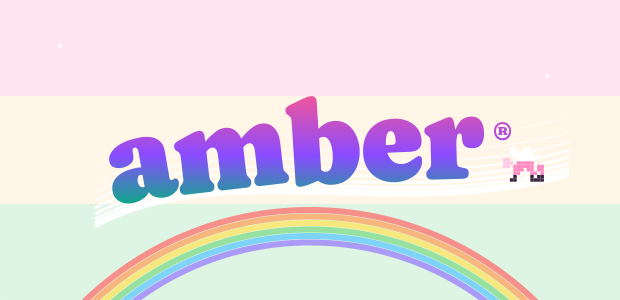
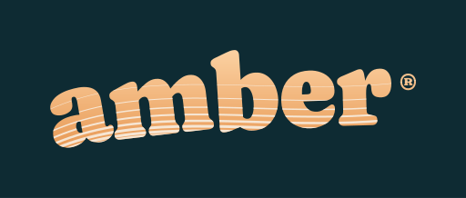
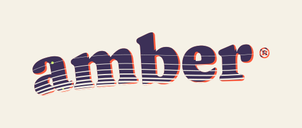
Rework: every plate is cropped to the lockup — the wordmark fills the frame and the nine swoosh hairlines are cropped around the letters (fading in at the a, exiting just past the ®, threading behind or around the glyphs). Font and swoosh geometry are extracted live from the shipped partial. Sprite-sheet craft: plate 02 ships a palette rail with empty slots, plate 05 is palette cycling, plate 06 tags its frames like a sprite sheet.
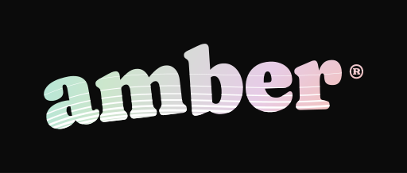








The sprite-workflow deliverable: the same locked font and hairlines with no ground plate — alpha-transparent SVGs cropped tight to the lockup, shown at 128 / 64 / 32 px on a checker so the alpha channel is visible. Drop-in ready for favicon and avatar slots.
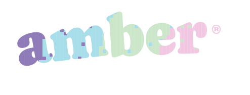
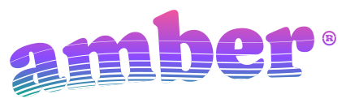